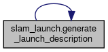

Functions | |
| def | generate_launch_description () |
Function Documentation
◆ generate_launch_description()
| def slam_launch.generate_launch_description | ( | ) |
Definition at line 28 of file slam_launch.py.
42 # slam_launch_file = os.path.join(sm_dance_bot_strikes_back_dir, 'launch', 'online_sync_launch.py')
def generate_launch_description()
Definition: slam_launch.py:28
References generate_launch_description().
Referenced by generate_launch_description().
Here is the call graph for this function:

Here is the caller graph for this function:
